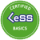

Curs Certificat -
Large-Scale Scrum Basics
Learnen Sie, wie Sie Ihre Organisation schlanker und
damit agiler und anpassungsfähiger machen.
Learnen Sie, wie Sie Ihre Organisation schlanker und
damit agiler und anpassungsfähiger machen.
Introducere
In vremurile dificile pe care le traversam, abilitatea de a furniza valoare si de a scurta ciclurile de inovare reprezinta caracteristica distinctiva intre o organizare buna si una superioara. Companiile mari dezvoltatoare de produsese indreapta catre aplicarea principiilor Agile si Large Scale Scrum in vederea furnizarii si sustinerii inovarii intr-un ritm din ce in ce mai rapid.
Provocarile principale pe care le intampina companiile mari dezvoltatoare de produse sunt:
Cum se poate replica ceea ce functioneaza la scara redusa pentru dezvoltari pe scara larga?
Care este structura unei companii optimizat prin aplicarea principiilor de invatare si Agile?
Cum se poate reorganiza compania în așa fel incat sa se creeze mediul potrivit pentru a avea succes pe termen lung?
Large Scale Scrum (LeSS) reprezinta pentru o organizatie ceea ce Scrum constituie pentru o echipa, anume: un cadru de lucru simplu si versatil care evolueaza in functie de contextul specific al fiecarei companii. LeSS extinde principiile Scrum precum empirismul si echipe auto-organizate oferind un cadru de lucru care poate fi aplicat pe scara larga. De asemenea, cuprinde reguli structural simple si instructiuni cu privire la adoptarea modului de lucru Scrum la dezvoltarea de produse de mare anvergura.
Conținut

Detaliază ce este LeSS și ce nu este LeSS.
Vei înțelege dacă prin implementarea LeSS se pot obtine beneficii la organizatia ta si cum se poare realiza acest lucru.

Explica cum LeSS este o abordare Scrum scalabilă.
Sumarireaza ce impact are implementarea LesSS asupra structurii organizationale (structuri, politici, etc.).
Clarifica cum structura organizationala curentă influențează agilitatea organizației.

Explică diferența si dinamica intre component teams si feature teams.

Explica rolurile in LeSS și scopul lor.
Expune cum LeSS scalează după aproximativ 8 echipe.
Ce este special la acest curs?
cest curs a fost conceput de la zero fiind destinat obtinerii unei bune experiente prin invatare la distanta cu ajutorul tehnicilor precum “Training from the BACK of the Room” de Sharon Bowman si “Learning How to Learn” de Barbara Oakley, PhD. Veți avea posibilitatea de a asimila informația într-un mod multi-senzorial (ascultând, observand, discutand, scriind, reflectand și invatandu-i pe ceilalți) și veti putea aplica in mod activ cunostintele obtinute (angajandu-te într-un mod activ asupra cunoștințelor tale). La finalul cursului, veți putea intreprinde actiuni concrete de aplicare a noilor cunostinte la propria organizatie (crea acțiuni concrete pentru a folosi noile cunoștințe în organizația ta).
Cursul este limitat la 10 participanți pentru a oferi un nivel de implicare și învățare ridicat.
Cursul consta din 6 sesiuni de până la 90 de minute fiecare, pe parcursul a 3 zile. Toți participanții trebuie sa participe activ în toate sesiunile interactionand prin intermediul uneltelor si a folosirii camerei video in vederea obtinerii certificarii CLB,( sa interacționeze cu uneltele pregatite, și sa foloseasca camera video, pentru a obține certificarea CLB).

100% interactiv
Max. 10 participanti
Sessiuni scurte în mai multe zile
Orar

Miercuri, 20. Mai
10:00 - 11:30 OESZ
•
12:00 - 13:00 OESZ
Joi, 21. Mai
10:00 - 11:30 OESZ
•
12:00 - 13:30 OESZ
Vineri, 22. Mai
10:00 - 11:30 OESZ
•
12:00 - 13:00 OESZ
Certificarea
Certificat LeSS Basics
Access la multe resorse despre LeSS

8 Scrum Education Units
La finalul cursului veți primi o certificare CLB și un cont pe less.works. De asemenea, veți obține o privire de ansamblu riguroasă asupra resurselor de învățare pe platforma less.works, inclusiv secțiunile: Why LeSS?, Introducere în LeSS (capitolul 2 din cartea 3), regulile, videoclipurile online & capitole din cărți.
Pe langa toate aceasta, după participarea la toate cele 6 sesiuni, veți putea revendica pana la 8 SEUs (Unități Educaționale Scrum) sub Categoria C, către acreditarea Scrum Alliance CSP (Certified Scrum Professional).
Public ţintă
Acest curs este destinat pentru oricine care activeaza in dezvoltarea de produse, cum ar fi: Scrum Master-i și practicieni Agile, preparatori (coaches) orgazinationali și de echipe, conducatori orgazinationali și manageri experimentati (seniori), proprietari de produse și de parti interesate, ingineri Software, tehnologi practicieni, ș. a.
Agenda
In acest curs vor fi acoperite urmatoarele subiecte:
Dece LeSS
LeSS și Scrum (ce au in comun si prin ce se disting?)
Component team vs. feature teams
Rolurile în LeSS
Evenimentele în LeSS
Principiile LeSS
LeSS Huge

Cerințe

Vorhandenes Scrum Wissen
Stable Internetverbindung
Eine Webcam
Unica cerinta pentru urmarirea cursului consta in posesia unor fundamente Scrum, care pot fi dobandite prin participare la cursurile Certified Scrum Master si Professional Scrum Master sau prin insusirea unor materiale introductive in Scrum, cum ar fi Scrum Primer, si o anume practica in Scrum. Pregatitor pentru participare la curs este recomandata parcurgerea si efecturea testului Scrum Test de pe less.work.
De asemenea, aveti nevoie de o conexiune stabila si rapida la internet, o camera video,un set de casti si un mediu care sa va permita concentrarea, precum si interactiunea online cu alti participanti atunci cand va fi cazul.
Pregatire recomandata
Participanți ar trebui sa revizuiasca materialul de introducere Scrum cum ar fi Scrum Primer. Un alt mod de pregatire bun pentru acest curs este Scrum Test de pe less.works. Este încurajat cu tărie sa efectuati acest test înainte de a participa la curs.

Despre instructor
Robert este unul dintre cei 20 de instructori certificati LeSS la nivel mondial și unul dintre puținii cu experiența practica în LeSS și LeSS Huge. Ca un agent al schimbarii cu vechime de peste 15 ani, consultand și antrenand, a lucrat cu mai mult de 30 de companii, printre care nume importante listate de DAX cum ar fi Adidas, BMW, BP, Dr. Oetker, Henkel, Hilti, Hugo Boss, SAP, Volkswagen, and ZF.
Din 2015 până în 2016 a condus o implementare LeSS la un Global Player in der Software Industry, scaland departartamentul de dezvoltare de la 3 la 7 echipe si antrenand echipele de dezvoltare și echipa de management în modalitatea de conducere a unei organizații Agile. In 2018 a contribuit cu îmbunătățiri semnificative la livrarea de produs pentru una dintre cele mai mari implementări LeSS Huge din lume la BMW AG. Lucrand cu mai mult de 30 de echipe, inclusiv grupuri mai mare de 400 de angajați, a determinat incrementari de produs tot la doua saptamani luand in calcul atat infrastructura hardware, cat și software-ul. Mai mult